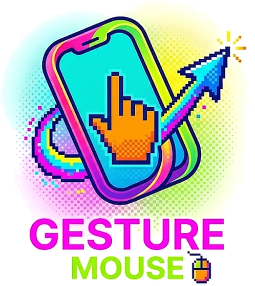
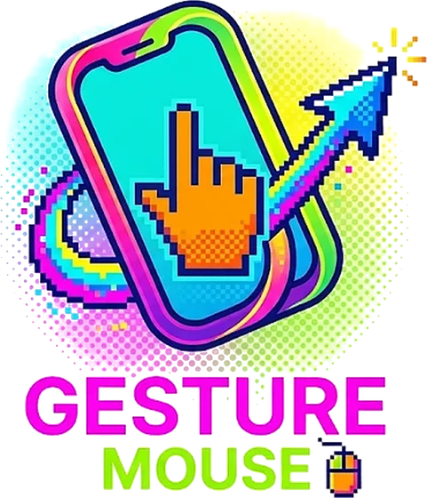

Gesture Mouse
Gesture MouseYour phone is a mouse and keyboard.
A trackpad, hand-gesture control through the camera, and typing with your phone's keyboard — over Bluetooth. Your computer sees an ordinary wireless mouse, so there's nothing to install on it.
Checking for the latest version…
On a computer? Scan this with your Android phone to open this page there — the app installs on the phone.


What it does
Three ways to drive your computer
Trackpad
Laptop-style: drag to move, tap to click, two fingers to scroll, two-finger tap to right-click, tap-and-hold to drag.
Air gestures
Point the camera at your hand and don't touch anything: sweep, aim, pinch to grab, dip a finger to click. Tracking runs entirely on the phone.
Keyboard
Type on the computer with your phone's own keyboard — swipe typing and voice typing included.
Made to fit you
Speed, scrolling and themes are adjustable, and a sensitivity tracker watches how you move and suggests a better speed.
Set up in two minutes
Install and connect
Tap a step to see it on the phone.
Compatibility
Will it work on my phone?
It needs Android 9 or newer. Almost every phone can act as a Bluetooth mouse, but a few manufacturers switch that feature off — so here's what people have confirmed so far.
| Phone | Android | Computer | Result | Notes |
|---|---|---|---|---|
| Loading… | ||||
Tried it on your phone?
Tell us how it went — 20 seconds, no name or email. It's how the next person with your phone knows it'll work.
Questions
FAQ
Why does Android warn me before installing?
Does it collect or upload anything?
Which computers does it work with?
It paired but won't connect, or the keyboard doesn't type
Does it work with the app in the background?
Some symbols come out wrong when I type
How do I update?
Is there an iPhone version?
Stay in the loop
Get new versions by email
The app doesn't update itself. Leave your email and we'll tell you when there's a new version — nothing else, and you can unsubscribe any time.
Contact
Questions or ideas?
Something not working, or a feature you'd like? Send a message.